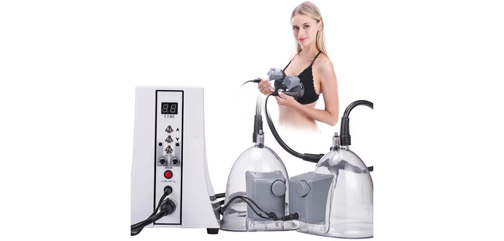
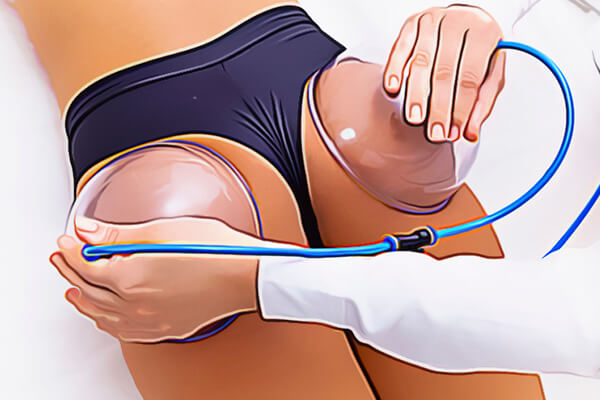
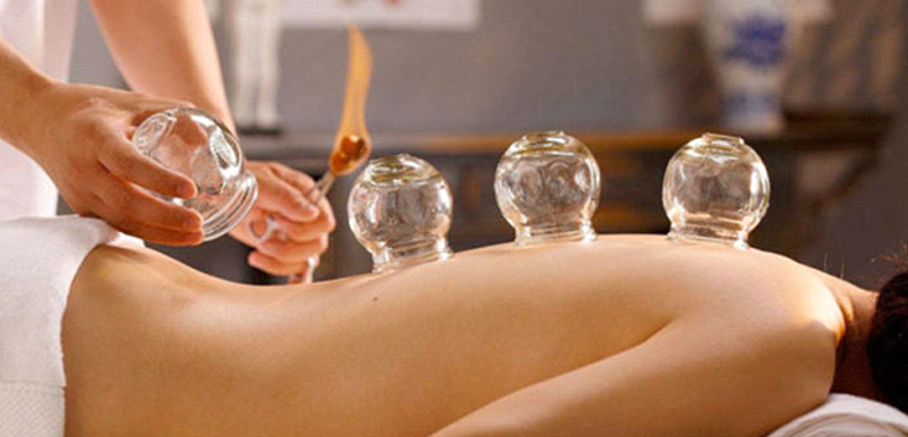
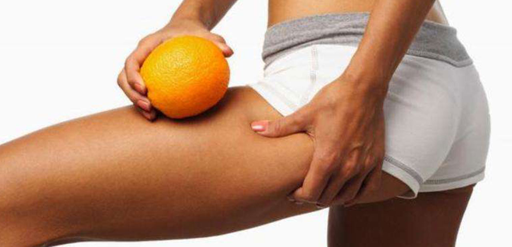
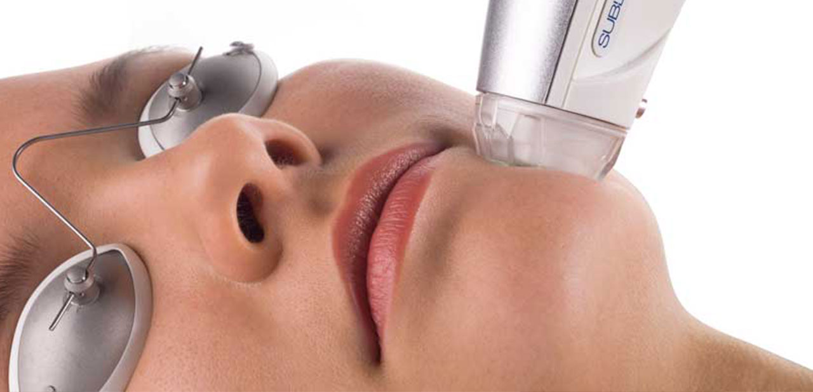

Podizanje zadnjice i grudi
Vakumsko podizanje zadnjice i grudi kao sto samo ime govori...
Detaljnije



Kavitacija
Pitaš se koliko je efikasna kavitacija za celulit? Da li je ova metoda uklanjanja celulita za tebe?
Detaljnije

Lifting lica radiofrekventnom energijom
Radiofrekventna energija (RF) stimuliše produkciju novog i reorganizaciju postojećih molekula kolagena u koži, vraćajući joj čvrstinu i elastičnost.
Detaljnije